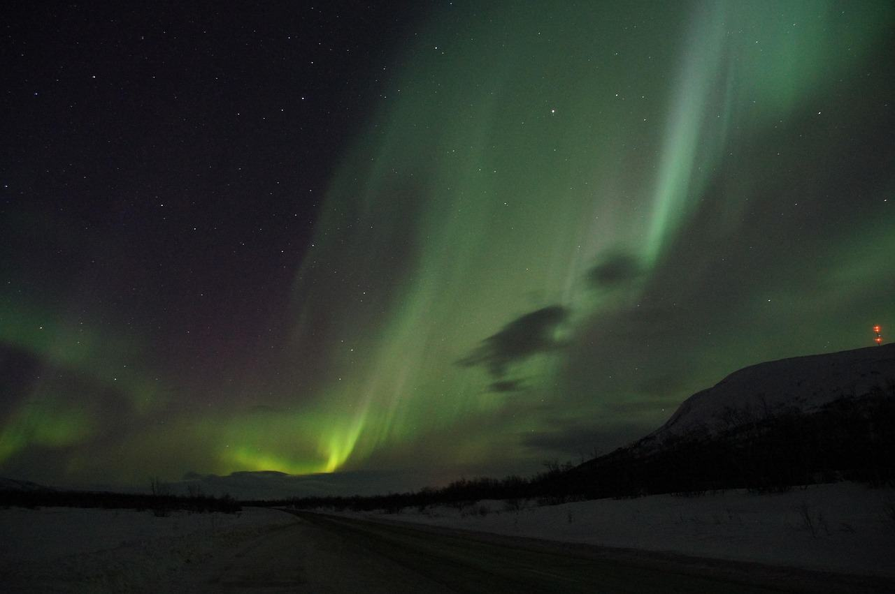
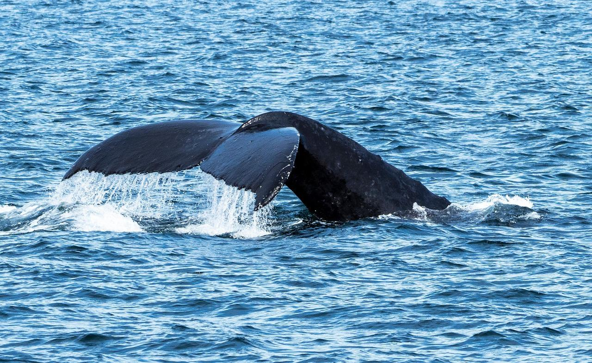
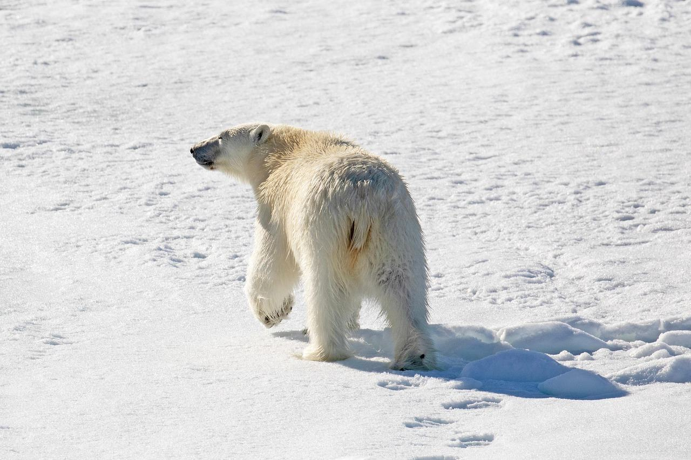
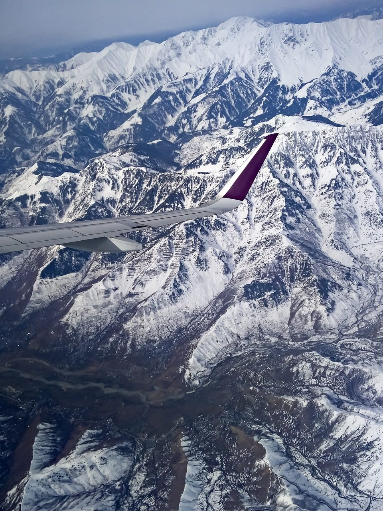

Юкон
Семь дней на Юконе: шесть ночей за сиянием, упряжки, горячие источники Такини и город золотой лихорадки.
- Длительность
- 7 дней
- Сезон
- февраль – март
- Группа
- до 8 человек
- Цена
- от 167 000 ₽
- Гид
- Ольга Ремизова
Ночи, упряжки и город золотой лихорадки
7 дней по дням
Даты и гид
День 1
Встреча и первая ночь у неба
Гид встречает рейс, по дороге заезжаем за тёплой одеждой напрокат. Ужин, короткий сон, и с 22:00 выходим смотреть небо, если прогноз хороший.

Маршрут ведёт Ольга Ремизова
Каждый день проверяет прогноз облачности и активности солнца. Если небо закрыто, группа спит, а выезд переносится на следующую ночь.
- Живёт в Уайтхорсе
- Сама ездит на упряжке
- Метеоролог по образованию
Цена поездки
Сколько выйдет вместе с перелётом
Тур оплачиваете нам в рублях по договору. Билеты, визовые сборы и страховку — сами, а мы подскажем, где дешевле. Цифры на сентябрь 2026 года.
Плюс визовые сборы 185 CAD: их платят Канаде при подаче анкеты.
Что входит в цену и что нет
Входит в цену
- Жильё: 6 ночей в домиках за городом
- Трансферы из аэропорта и обратно
- Гид все 7 дней, в том числе ночью
- Упряжки хаски, 20 км
- Горячие источники Такини
- Прокат тёплой одежды и обуви
Оплачивается отдельно
- Перелёт до Уайтхорса
- Визовые сборы: 185 CAD
- Обеды и ужины
- Страховка
- Полёт над горами по желанию
Что стоит знать до записи
- Сияние не гарантируемЕго показывает небо, а не мы. Поэтому в маршруте шесть ночей за городом: чем больше ясных ночей, тем выше шанс.
- Будет холодноДнём около −15 °C, ночью бывает −30 °C. Комбинезон, унты и варежки выдаём на месте.
- Утро для снаНебо смотрим с 22:00 до 03:00, поэтому гид не будит группу раньше десяти утра.
Даты и гид
Заезды 2027 года
-
18–24 февралятолько с готовой визой
Юкон: сияние над Уайтхорсом7 дней, 2027 годВедёт Ольга Ремизоваосталось 3 места
от 167 000 ₽
-
15–21 марта
Юкон: сияние над Уайтхорсом7 дней, 2027 годВедёт Ольга Ремизоваосталось 6 мест
от 167 000 ₽
Предоплата 30 % при записи — 50 100 ₽, остальное за месяц до поездки. Заезд идёт от четырёх человек: если группа не соберётся за 45 дней до старта, перенесём даты или вернём предоплату целиком.
Нет подходящих дат? Для компании от четырёх человек соберём частную поездку по этой программе.
Что спрашивают перед записью
Какая нужна физическая форма?
Особой не нужно: пешие выходы до 5 км по снегу, на нартах после инструктажа справляется каждый.
Как лететь до Уайтхорса?
Через Стамбул и Ванкувер, около 30 часов с пересадками. Подберём рейсы так, чтобы группа прилетела в один день.
Можно с детьми?
С 12 лет. Детям младше ночи на морозе тяжело, для семьи соберём частную поездку.
Что с деньгами на месте?
Российские карты в Канаде не работают. Возьмите наличные доллары или карту банка Казахстана или Киргизии. Тур оплачиваете нам в рублях по договору.
Если хочется другого
Все туры-

Тихий океан: Ванкувер и остров
Океан, кедровый лес, горбачи и медведи с борта лодки.
от 172 000 ₽ближайший заезд 5 июня
-

Черчилл: белые медведи
Тундровый вездеход и белые медведи у кромки Гудзонова залива.
от 268 000 ₽ближайший заезд 2 ноября
-

Виза и перелёт
Когда подавать анкету под даты этого маршрута и как лететь.
Визовый календарь